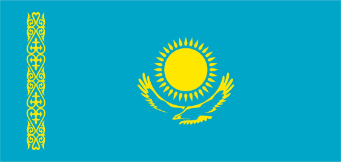
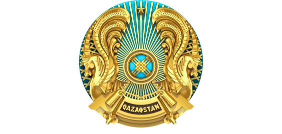
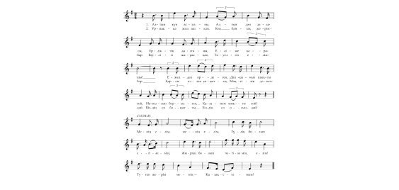

ҚАЛАДАҒЫ СЫБАЙЛАС ЖЕМҚОРЛЫҚҚА ҚАРСЫ КҮРЕС ЖҰМЫСТАРЫ ТУРАЛЫ МӘЛІМЕТ
Елбасымыз жыл сайынғы Қазақстан халқына арнаған жолдауларында және Үкімет мәжілістерінде сыбайлас жемқорлықпен күрес мәселелерін үнемі пысықтап отырады. 1998 жылдың 2 шілдесінде Қазақстан Республикасының «Сыбайлас жемқорлыққа қарсы күрес туралы» Заңы қабылданып, онда сыбайлас жемқорлықпен күресу әрбір мемлекеттік органдар басшыларының, ел азаматтарының міндеті екендігі атап көрсетілді. Аталмыш заң азаматтардың құқықтары мен бостандықтарын қорғауға, сыбайлас жемқорлық көріністерінен туындайтын қауіп-қатерден еліміздің ұлттық қауіпсіздігін қамтамсыз етуге, жемқорлыққа қатысты құқық бұзушылықтың алдын алуға бағытталған. Қоғамымыздың барлық саласына дендеп еніп бара жатқан жемқорлықтың жолына батыл тоқсауыл қойып, олардың зардаптарын жою және мүдделілерді жауапқа тарту бүгінгі күннің ең басты міндеттерінің бірі болып табылады.
Оңтүстік Қазақстан облысы әкімдігінің 13 ақпан 2008 жылғы №46 қаулысына сәйкес Түркістан қаласы әкімдігінің қаулысымен қала әкімдігі жанында сыбайлас жемқорлыққа қарсы күрес мәселелері жөніндегі комиссия құрылып, ережесі бекітілді. Қазіргі таңда, қала әкімдігінің 2011-2015 жылдарға арналған сыбайлас жемқорлыққа қарсы күрес іс-шаралар жоспары және қала әкімі аппаратының жоспары бекітіліп, тиісті жұмыстар жүргізілуде.
Қала әкімдігі Заң талаптарын орындау мақсатында халыққа тиісті жағдайлар жасауда. Атап айқанда, Түркістан қалалық Жер қатынастары бөлімінде жер алуға өтініш білдірген азаматтардың кезегі арнайы тақтаға ілінген. Бұл кезек туралы мағлұматты әрбір азамат веб-сайтта көруге болады.
Түркістан қаласы әкімдігінің веб-сайты арқылы қала әкіміне кез-келген азамат өз сұрағын қоюға толық мүмкіндігі бар. Қызметкерлердің жыл сайынғы декларациялары заң талабына сай тапсырылуда. Қала әкімі аппаратына, қала әкімдігіне қарасты бөлімдерге және ауылдық округтерге әкімшілік мемлекеттік қызметке орналасу барысында ҚР «Сыбайлас жемқорлыққа қарсы күрес туралы», «Мемлекеттік қызмет туралы» Заңының, Мемлекеттік қызметшілердің ар-намыс кодексінің және басқа да норматвитік құқықтық актілердің талабы қатаң сақталынуда.
Қалалық «Түркістан» газетінің «Заң және заман» айдарында мемлекеттік мекемелер мен ұйымдардың басшылары мен қызметкерлерінің сыбайлас жемқорлыққа қарсы күрес және басқа да құқықтық тақырыптарда мақалалары жарияланып тұруда. Қазақстан Республикасы Президентінің тапсырмасына сәйкес әр жыл сайын 12 ауылдық округтерде және Түркістан қаласының халқы алдында есеп беру кезінде әлеуметтік-экономикалық жағдай туралы баяндалып сонымен қатар, сыбайлас жемқорлыққа қарсы күреске бағытталған жұмыстар туралы хабардар етілуде. Бұл іс-шара 2015 жылдың басында да өз жалғасын тауып, есеп беру барысында айтылған халықтың ұсыныстары бойынша жұмыс жасау мақсатында арнайы кесте бекітіліп, ауылдық жерлердегі жер, жол және электр тағы басқа да мәселелер өз шешімдерін табуда.
Государственный Флаг Республики Казахстан
Флаг – это один из главных символов государства, олицетворяющий его суверенитет и идентичность. Термин «флаг» происходит от нидерландского слова «vlag».Флаг - это прикрепленное к древку или шнуру полотнище установленных размеров и цветов, обычно с изображением на нем герба или эмблемы. С древних времен флаг выполнял функции объединения народа страны и его идентификации с определенным государственным образованием.
Государственный флаг независимого Казахстана был официально принят в 1992 году. Его автором является художник Шакен Ниязбеков.
Государственный флаг Республики Казахстан представляет собой прямоугольное полотнище небесно-голубого цвета с изображением в центре солнца с лучами, под которым – парящий орел (беркут). У древка – вертикальная полоса с национальным орнаментом. Изображение солнца, его лучей, орла и национального орнамента – цвета золота. Соотношение ширины флага к его длине – 1: 2.
Государственный Герб Республики Казахстан
Герб – один из главных символов государства. Термин «герб» происходит от немецкого слова «erbe» (наследство) и означает наследственный отличительный знак – сочетание фигур и предметов, которым придается символическое значение.
История свидетельствует, что еще кочевники эпохи бронзы, проживавшие на территории современного Казахстана, идентифицировали себя с особым символом – тотемом, графическое выражение которого впоследствии получило наименование «тамга». Впервые данный термин начал употребляться в Тюркском каганате.
Герб суверенного Казахстана был официально принят в 1992 году. Его авторами являются известные архитекторы Жандарбек Малибеков и Шот-Аман Уалиханов.
Государственный герб Республики Казахстан имеет форму круга (колеса) – это символ жизни и вечности, который пользовался особым почетом среди кочевников Великой степи.
Центральным геральдическим элементом в государственном гербе является изображение шанырака (верхняя сводчатая часть юрты) на голубом фоне, от которого во все стороны в виде солнечных лучей расходятся уыки (опоры). Справа и слева от шанырака расположены изображения мифических крылатых коней. В верхней части находится объемная пятиконечная звезда, а в нижней части надпись «Қазақстан». Изображение звезды, шанырака, уыков, мифических коней, а также надписи «Қазақстан» – выполнены в цвете золота.
Шанырақ – это главная системообразующая часть юрты, по форме напоминающая небесный купол и являющаяся одним из ключевых элементов жизнеустройства в традиционной культуре евразийских кочевников. В Государственном гербе республики образ шанырака – это символ общего дома и единой Родины для всех народов, проживающих в стране. Стабильное развитие Казахстана зависит от благополучия каждого гражданина, как прочность и устойчивость шанырака зависит от надежности всех его уыков (опор).
Крылатые мифические кони – тулпары в государственном гербе являются ключевым геральдическим элементом. Образ коня с незапамятных времен олицетворяет такие понятия, как храбрость, верность и силу. Крылья символизируют многовековую мечту многонационального народа Казахстана о построении сильного и процветающего государства. Они свидетельствуют о чистых помыслах и стремлении к последовательному совершенствованию и созидательному развитию. Золотые крылья скакунов напоминают также золотые колосья и олицетворяют собой трудолюбие казахстанцев и материальное благополучие страны.
В прошлые века рога активно использовались в культовых обрядах кочевников, а также в качестве навершия их боевых стягов. Изображения небесной благодати, земного плодородия и воинской удачи в виде рогов различных животных всегда занимали значимые места в символических композициях различных народов. Таким образом, крылатый конь с рогом изобилия является важным типологическим образом, который имеет глубокие семантические и исторические корни.
Еще одна деталь в государственном гербе республики – пятиконечная звезда. Данный символ используется человечеством с давних времен и олицетворяет постоянное стремление людей к свету истины, ко всему возвышенному и вечному. Изображение звезды в государственном гербе отражает желание казахстанцев созидать страну, открытую для сотрудничества и партнерства со всеми народами мира. Сердца и объятия жителей Казахстана открыты представителям всех пяти континентов.
Государственный Гимн Республики Казахстан
Гимн – это один из главных символов государства. Сам термин «гимн» происходит от греческого слова «gimneo» и означает «торжественная песня». Гимн выступает в качестве важной звуковой символики, имеющей ключевое значение для эффективной социально-политической консолидации и этнокультурной идентификации граждан страны.
В истории независимого Казахстана государственный гимн страны утверждался дважды – в 1992 и в 2006 годах.
После обретения республикой государственного суверенитета в 1992 году был объявлен конкурс на музыку и текст гимна Казахстана. По итогам конкурса было принято решение сохранить музыкальную редакцию гимна Казахской ССР. Таким образом, авторами музыки первого казахстанского гимна стали Мукан Тулебаев, Евгений Брусиловский и Латиф Хамиди. В конкурсе на лучший текст также победил авторский коллектив, представленный известными поэтами: Музафаром Алимбаевым, Кадыром Мырзалиевым, Туманбаем Молдагалиевым и поэтессой Жадырой Дарибаевой.
В целях популяризации звуковой символики страны в 2006 году был принят новый государственный гимн. Его основой стала популярная в народе патриотическая песня «Менiң Қазақстаным». Она была написана в 1956 году Шамши Калдаяковым на стихи Жумекена Нажимеденова. Для придания песне высокого статуса государственного гимна и более торжественного звучания Президент Казахстана Нурсултан Назарбаев доработал первоначальный текст. Парламент Казахстана на совместном заседании палат 6 января 2006 года внес соответствующие поправки в Указ «О государственных символах» и утвердил новый государственный гимн страны.